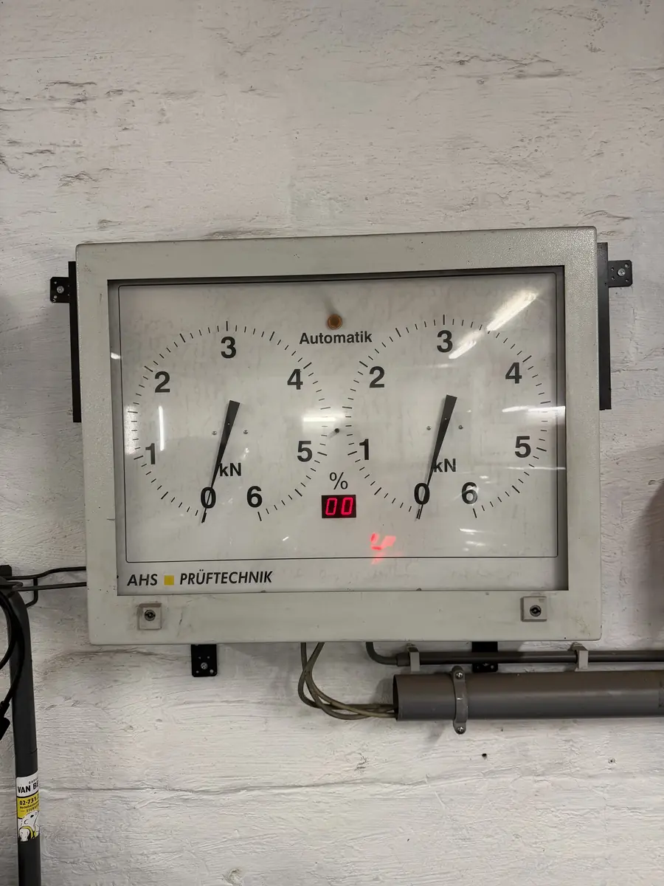

Votre contrôle technique approche et vous avez peur de ne pas passer? Chez DMT AUTOGROUP à Zaventem, on fait un pré-contrôle complet, on détecte tout ce qui pourrait poser problème, et on répare avant que vous alliez au centre de contrôle. Résultat : vous passez du premier coup. Technische keuring binnenkort en bent u bang dat u niet slaagt? Bij DMT AUTOGROUP in Zaventem doen we een volledige voorcontrole, detecteren we alles wat problemen kan opleveren, en herstellen we voordat u naar het keuringscentrum gaat.
On passe en revue tous les points que le centre de contrôle va vérifier. Freins, éclairage, pneus, émissions, suspension, direction, carrosserie — on vérifie tout. Si quelque chose ne passe pas, on vous le dit clairement avec le coût de la réparation. Pas de surprises. Si vos freins sont usés, on les remplace. Si vos pneus sont lisses, on en monte des neufs. Tout en un seul passage chez nous sur la Mechelsesteenweg à Zaventem. We overlopen alle punten die het keuringscentrum controleert. Remmen, verlichting, banden, uitstoot, ophanging, stuurinrichting, carrosserie — we controleren alles. Als iets niet in orde is, zeggen we het duidelijk met de kostprijs van de herstelling.


Le pré-contrôle, c'est comme un examen blanc avant le vrai examen. On simule exactement ce que le centre de contrôle va faire : test de freinage sur notre banc AHS Prüftechnik, vérification des émissions, contrôle de l'éclairage, état des pneus, jeu dans la direction et la suspension. Vous repartez avec un rapport clair de ce qui est OK et de ce qui doit être réparé. Pour les habitants de Kraainem, Wezembeek-Oppem et Woluwe, on est le garage le plus pratique pour ça. De voorcontrole is als een proefexamen voor het echte examen. We simuleren precies wat het keuringscentrum doet: remtest op onze AHS Prüftechnik testbank, controle uitstoot, verlichting, bandenconditie, speling in stuurinrichting en ophanging.
Si le pré-contrôle révèle des problèmes, on les répare tout de suite. Ampoules grillées, plaquettes de frein usées, fuite d'échappement, jeu de direction — ce sont les causes les plus fréquentes de refus au contrôle technique en Belgique. Chez DMT AUTOGROUP, on fait les réparations le jour même dans la plupart des cas. Vous n'avez pas besoin de faire des allers-retours entre le garage et le centre de contrôle. On règle tout ici, et vous allez au CT serein. Combiné avec une vidange, c'est l'entretien complet qui remet votre voiture à niveau. Als de voorcontrole problemen onthult, herstellen we ze meteen. Doorgebrande lampen, versleten remblokken, uitlaatlek, stuurspeling — dit zijn de meest voorkomende redenen voor afkeuring bij de technische keuring in België.
Lundi — Vendredi · 08:30 — 18:00
Mechelsesteenweg 270, 1933 ZaventemMaandag — Vrijdag · 08:30 — 18:00
Mechelsesteenweg 270, 1933 Zaventem